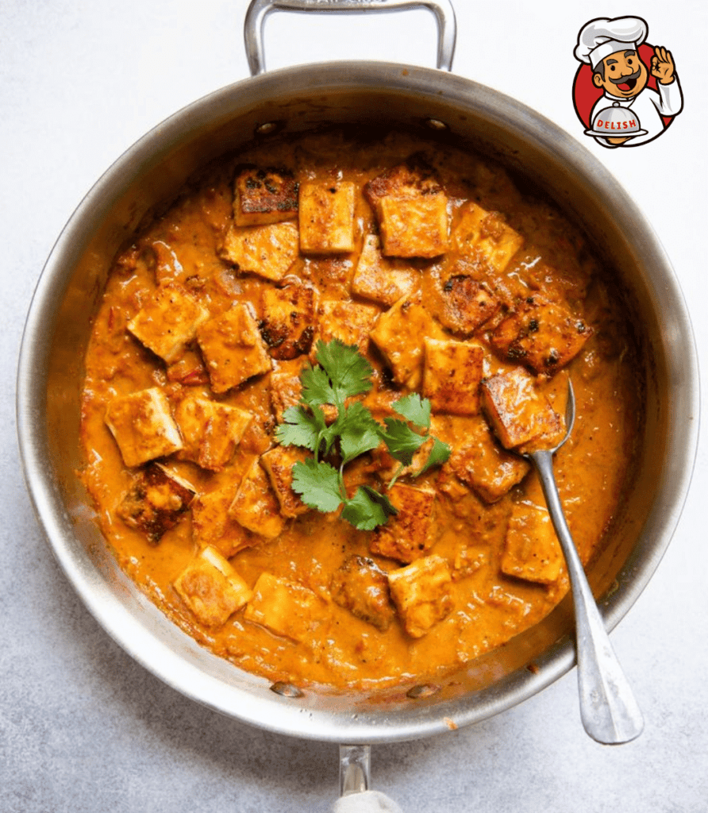

Paneer Tikka Masala
Paneer Tikka Masala is a delicious Indian dish made with marinated paneer (Indian cottage cheese) cooked in a rich and creamy tomato-based gravy.
Ingredients:
- Paneer (Indian cottage cheese)
- Yogurt
- Tomatoes
- Onion
- Garlic
- Ginger
- Spices: Garam masala, turmeric, cumin, coriander, paprika, chili powder
- Cream
- Butter
- Fresh coriander leaves (for garnish)

Find the full recipe here.
Attachment(Image):